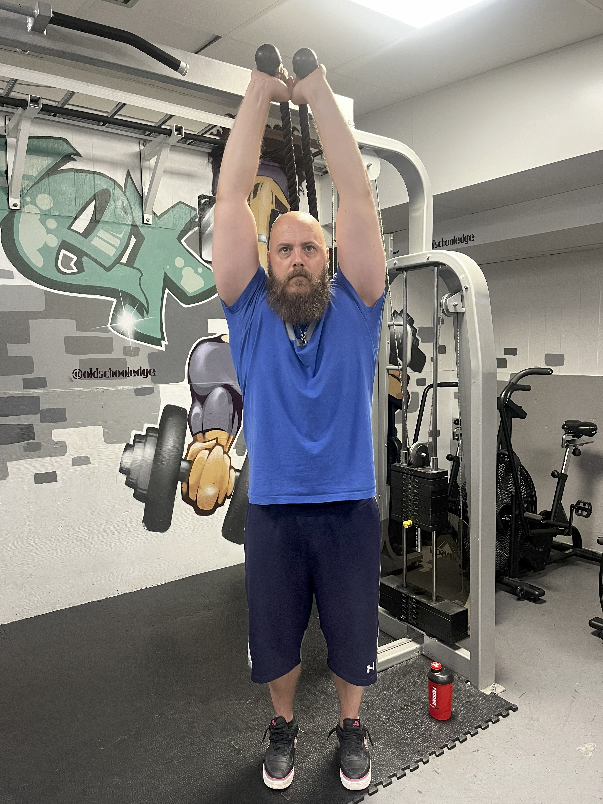
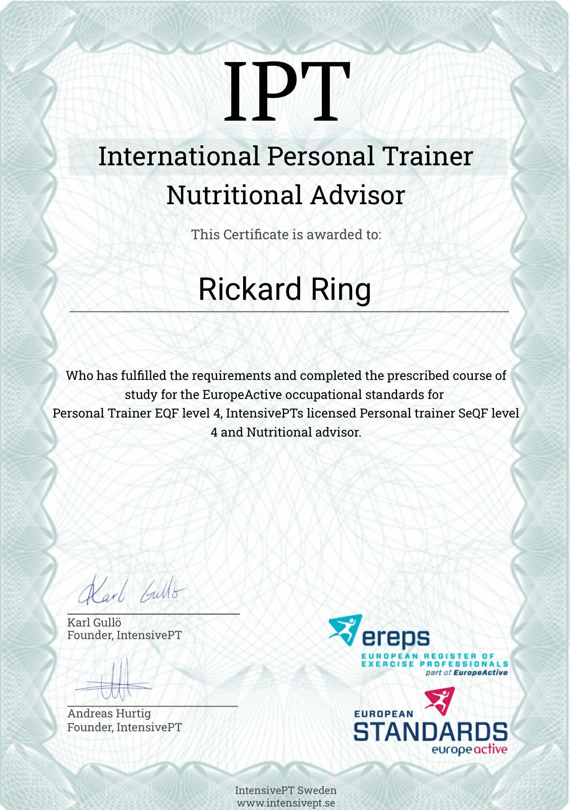

Om oss


Från stjärnkock till hälsocoach
Efter över 20 år på några av världens bästa restauranger – med meriter som kökschef, specialkostansvarig på Nobelmiddagar och matlagning för kungligheter, världsstjärnor och idrottslag – valde Rickard att byta bana. Med erfarenhet från sju olika länder och en passion för både smaker och fysisk prestation blev nästa steg självklart: att hjälpa andra att må bättre genom träning, kost och hälsa. Med bakgrund inom elitidrott, styrketräning och evidensbaserad coaching erbjuder Rickard ett helhetsperspektiv som ger resultat – både för kropp och sinne.
Vi är engagerade i att hjälpa dig uppnå dina mål med professionell vägledning och personlig support.